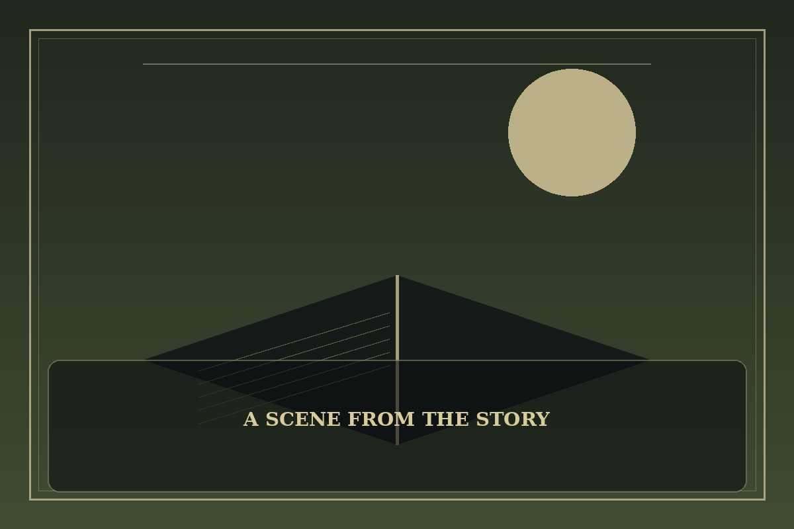

Wind Breaker
Synopsis
A talented cyclist finds that competition is about more than speed. Through difficult rides and unexpected friendships, he learns how pride, teamwork, and perseverance shape the road ahead.
Chapter 1: The Hill at Dawn
The hill rose beyond the last row of houses, a long ribbon of asphalt that every rider in the club dreaded. Jae had trained alone for months, convinced that a stopwatch was a more honest companion than people.
At the starting line, his chain slipped and the others passed him before he could fix it. He chased hard, burning through his energy, until he found a younger rider struggling with a loose brake cable. The sensible choice was to keep going.
Jae stopped. By the time they reached the summit together, the race had ended and his time was ruined. Yet the club waited at the overlook with spare tools and warm drinks. For the first time, he wanted to return not to beat them, but to ride beside them.

This fan-made sample is an original piece created for a student website project; it is not an official chapter of Wind Breaker.